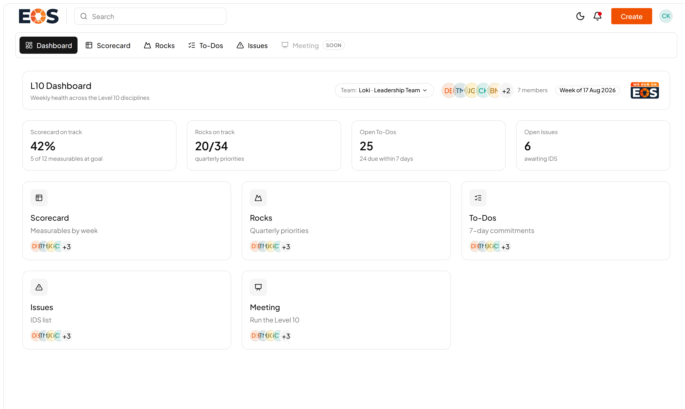
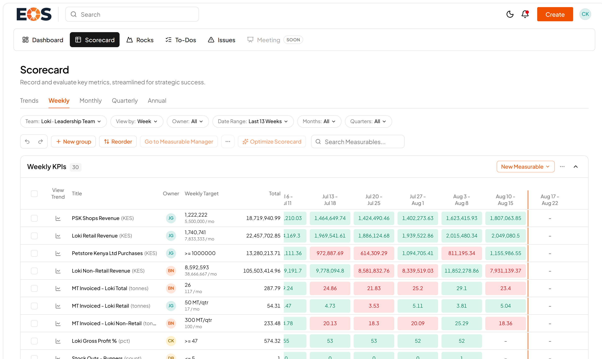
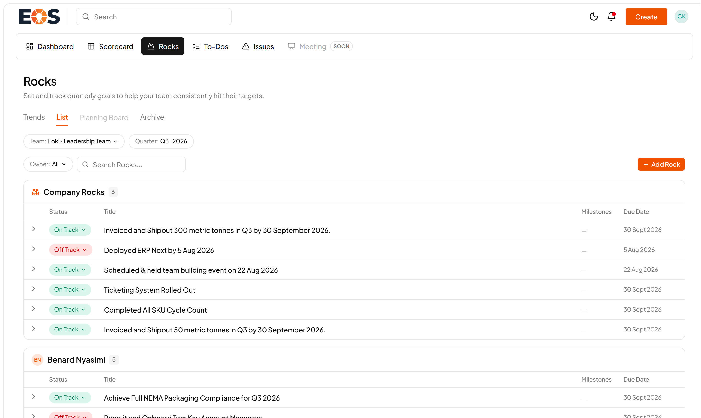
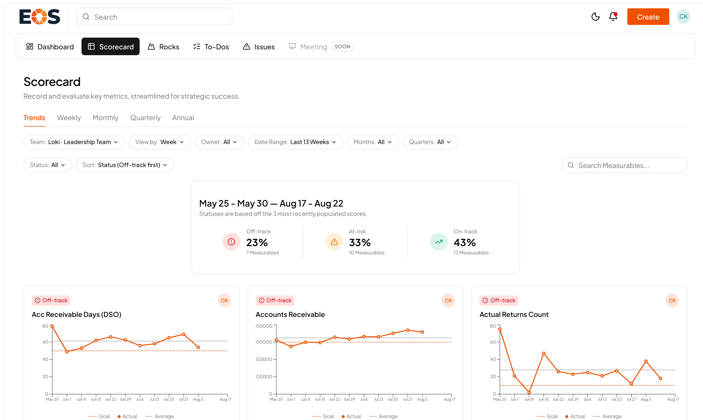
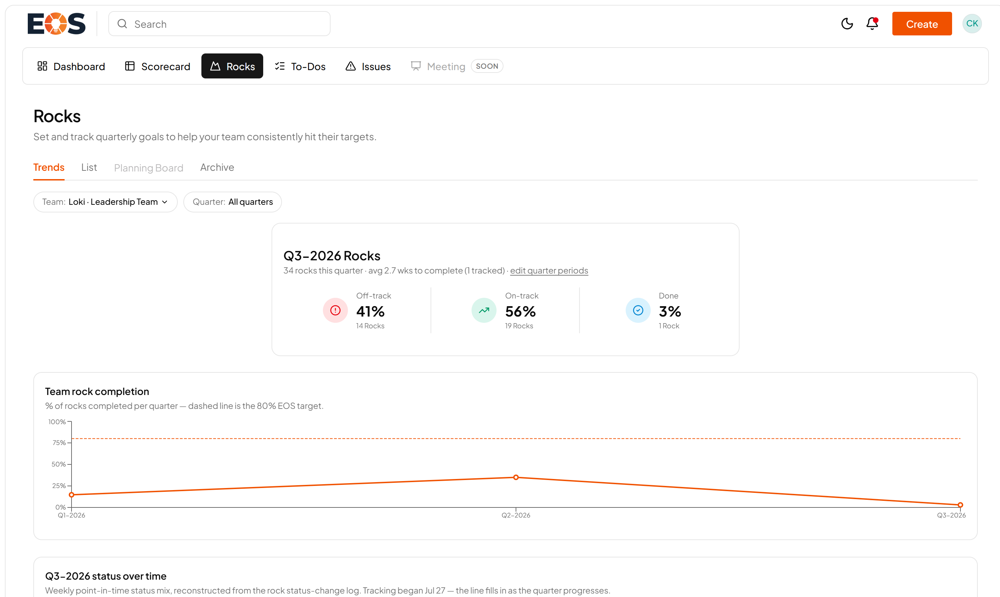
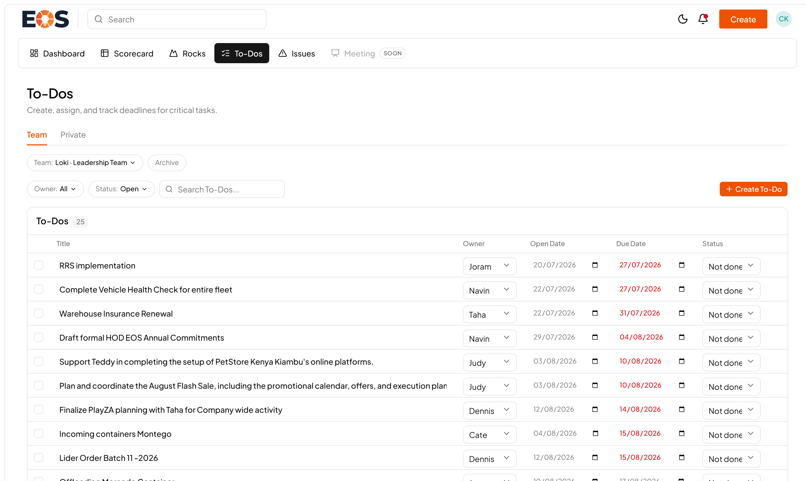
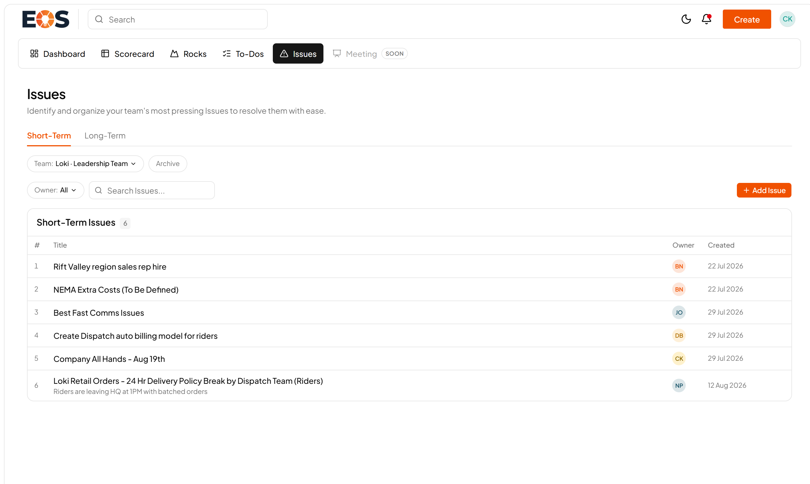
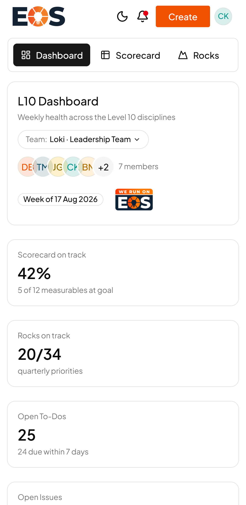

EOS Platform · For LVL/PSK Teams
Everything you need to sign in and run your week on the LVL/PSK EOS Platform.
| 1. | Go to https://eos.rnd-loki.com/l10/login (the button in your invite email takes you there). |
| 2. | Enter your work email address and the one-time password from the invite email. |
| 3. | You will be asked to set your own password before continuing — choose something only you know (6+ characters). |
| 4. | That's it — you land on the Dashboard. Next time, sign in with your own password. |
Scorecard status, rocks progress, open to-dos and issues, all in one view. The tabs along the top take you to each module.

The Dashboard. The greyed-out Meeting · Soon tab is the guided meeting mode, still in development.
The measurables you own, at weekly, monthly, quarterly and annual cadence. Enter your number for the week and it is instantly scored against goal — green on-track, red off-track. AUTO-SYNCED rows fill themselves (see section 4).

Weekly KPIs — revenue and tonnage rows here are synced from SAP automatically.
These measurables are wired directly to SAP B1 / the data warehouse and refresh automatically about every 3 hours — no manual entry needed:
Every other measurable is entered by its owner each week — that's the discipline the scorecard runs on.
Your 90-day priorities with milestones and due dates. Keep the status honest — On Track or Off Track — and tick milestones off as you complete them. The Trends tab shows completion history across quarters.

Company rocks and personal rocks for the quarter, grouped by owner.
Both the Scorecard and Rocks pages open on a Trends tab. Scorecard Trends buckets every measurable into Off-track / At-risk / On-track from its three most recent scores, with a chart per measurable against goal and average — spot a drifting number before it becomes a meeting topic.

Scorecard Trends — status buckets up top, a trend chart for every measurable below.
Rocks Trends tracks quarter completion against the 80% EOS target, plus how rock statuses have shifted over the quarter.

Rocks Trends — completion per quarter and status over time.

To-Dos — 7-day commitments from the weekly meeting. Overdue dates show in red.

Issues — the IDS list (Identify, Discuss, Solve). Log obstacles as they come up so they get solved in the meeting, not forgotten.
Use the + Create button (top right, on every page) to quickly add a to-do, issue, rock or headline from anywhere.
| Feature | Status |
|---|---|
| Dashboard, Scorecard (all cadences + Trends), Rocks (+ milestones & Trends), To-Dos (team & private), Issues (short & long-term) | LIVE |
| Automatic SAP data syncs (section 4), quick Create, password reset by email, phone & tablet access | LIVE |
| Meeting mode — guided Level 10 agenda that runs the weekly meeting end-to-end | IN DEVELOPMENT |
| Dispatch & warehouse data syncs — order-lifecycle measurables fed automatically via Invotrak, then finance measurables | IN DEVELOPMENT |
| Jade in the portal — chat with Jade, our data assistant, directly inside the platform | IN DEVELOPMENT |
| Team rollout — accounts for your team members, once the HOD phase has bedded in | PLANNED |
The platform works fully in your phone's browser — sign in once and you stay signed in for 30 days. Add it to your home screen and it opens full-screen like an app:
iPhone / iPad (Safari)
| 1. | Open eos.rnd-loki.com in Safari and sign in. |
| 2. | Tap the Share button (the square with the arrow pointing up, bottom of the screen). |
| 3. | Scroll down and tap Add to Home Screen, then Add. |
Android (Chrome)
| 1. | Open eos.rnd-loki.com in Chrome and sign in. |
| 2. | Tap the ⋮ menu (top-right corner). |
| 3. | Tap Add to Home screen (on some phones it says Install app), then Add. |
An EOS icon appears on your home screen — tap it any time to jump straight to your dashboard.

The platform on your phone.